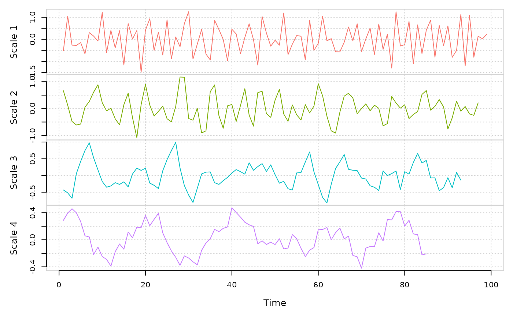

Calculates the coefficients for the discrete wavelet transformation
modwt(x, nlevels = floor(log2(length(x) - 1)), filter = "haar")
| x | A |
|---|---|
| nlevels | A |
| filter | A |
A field<vec> that contains the wavelet coefficients for each decomposition level
Performs a level \(J\) decomposition of the time series using the pyramid algorithm. The default \(J\) is determined by \(floor\left(log_2 \left(length\left(x\right)\right)\right)\)
#> #> Results of MODWT using haar filter with 6 levels: #> Displaying only the first 6 coefficients... #> Level 1 Wavelet Coefficients #> -0.5154097 1.053872 -0.2625567 -0.2736885 -0.1443587 -0.6563173 ... #> Level 2 Wavelet Coefficients #> 0.6648886 0.1275349 -0.4771462 -0.6093615 -0.5755298 0.05253529 ... #> Level 3 Wavelet Coefficients #> -0.4324668 -0.5193264 -0.6820166 0.05272893 0.4199327 0.7445505 ... #> Level 4 Wavelet Coefficients #> 0.2871724 0.3948033 0.4591856 0.3995357 0.2700206 0.05856007 ... #> Level 5 Wavelet Coefficients #> 0.05044408 0.04297379 0.02943181 -0.009765617 0.06226712 0.1188075 ... #> Level 6 Wavelet Coefficients #> 0.0744104 0.06411294 -0.008083629 -0.009948806 0.05591394 0.05663235 ...plot(ret)